Scott family tree
The Scott family in Australia
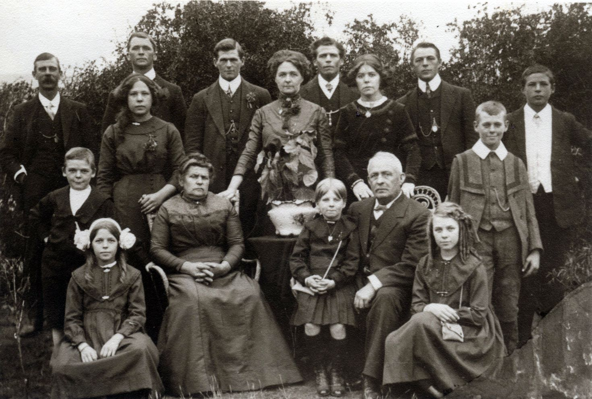
The Scott and Pearce families
Album of collected photos
-
George SCOTT b 1807 d 1876
m (1828)
Sarah BRYANT b 1809
-
Elizabeth SCOTT b 1838 d 1892 m (1856) Thomas HENRY
-
George Frederick SCOTT b 1842 m (1863) Elizabeth BROWN
- Julia SCOTT b 1845 m (1867) Arthur MEDD
-
Charles Sidney Scott b 1848 d 1912
m (1872) Ellen GREEN b 1850 d 1917
- Charles Albert Edwin SCOTT b 1873 d 1949 m (1901) Elsie May Lugg b 1883
- George Henry SCOTT b 1874 d 1935
- William SCOTT b 1876 d 1930 m (1902) Edith Mary Uppil b 1877 d 1965
![[X]](scott-tree/icons/blue_16x16.JPG) 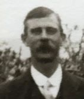
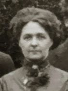
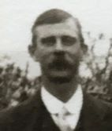
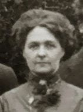
-
Frederick James SCOTT b 1878 d 1947
m (1898)
Lily May PEARCE b 1882 d 1919
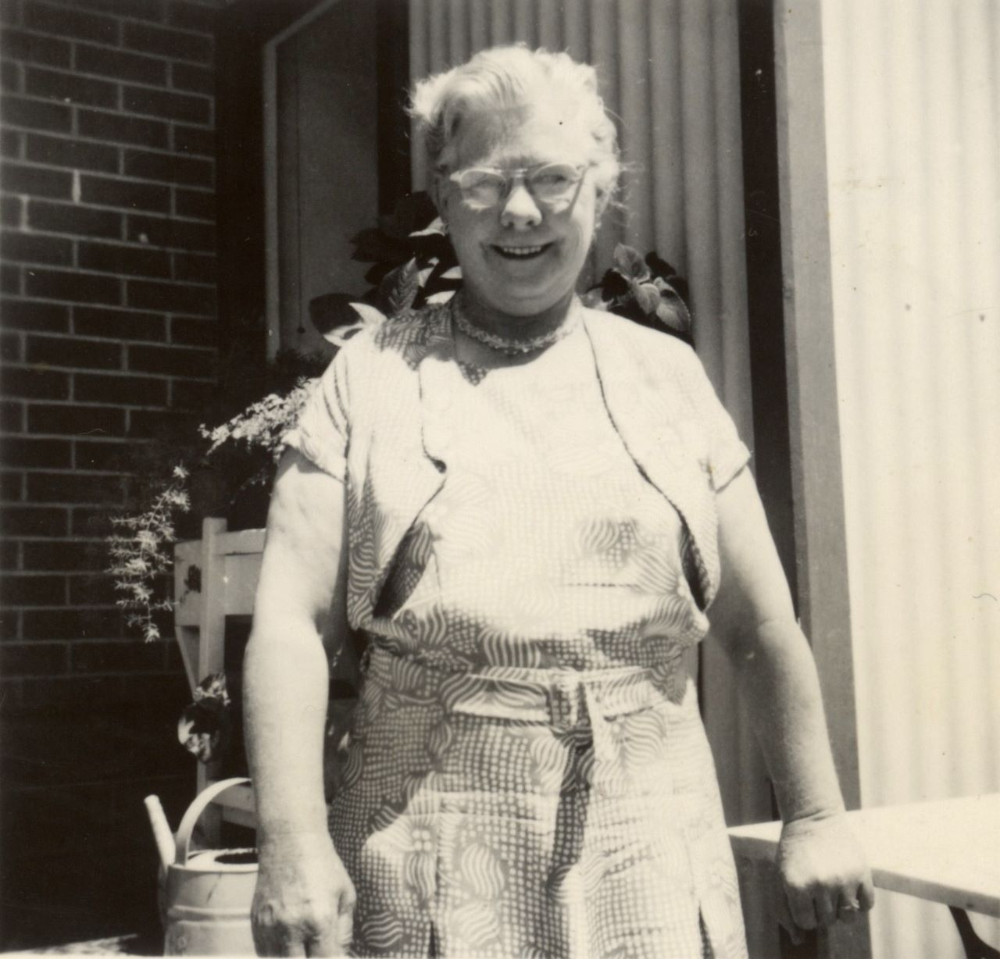

-
Alice May SCOTT
m (1898)
Eric Roy JARVIS
- Keith Scott JARVIS
- Shirley JARVIS
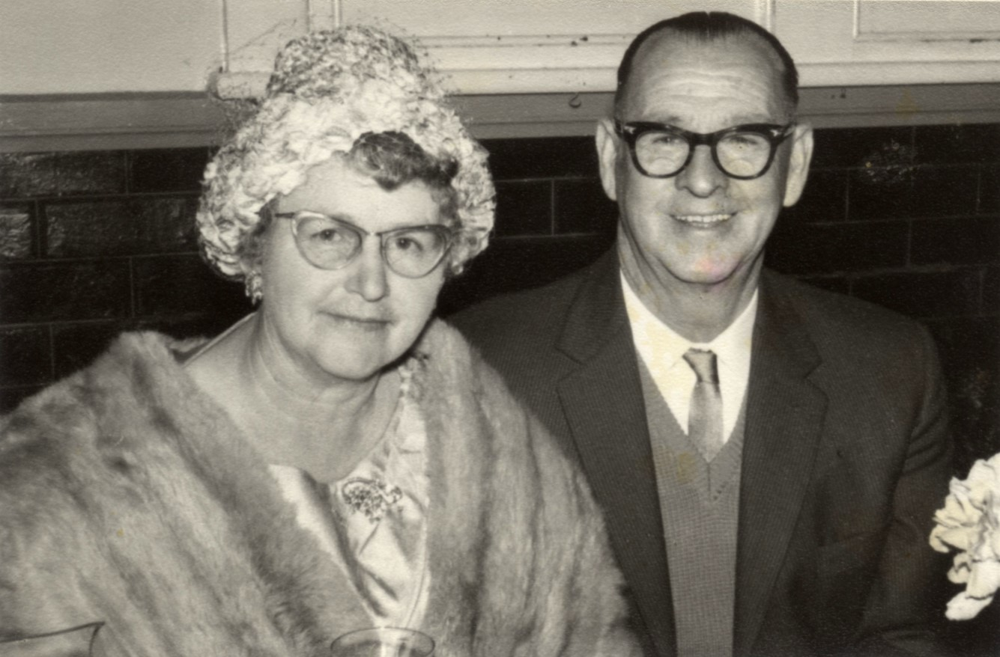
- Arnold Frederick Edwin Sydney SCOTT b 1900 m (1926) Violet MOON
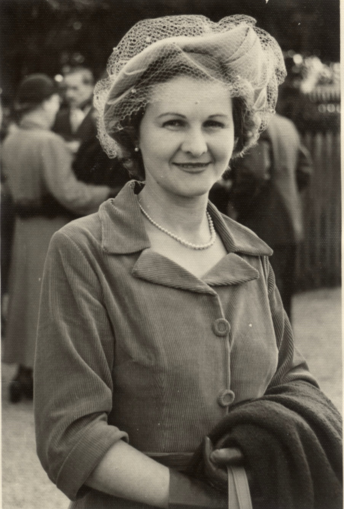
- Norma SCOTT m (1948) Raymond DESMOND

- Gregory DESMOND m (1988) Leanne ROWNTREE
- David DESMOND
- Laura DESMOND
- Robert DESMOND
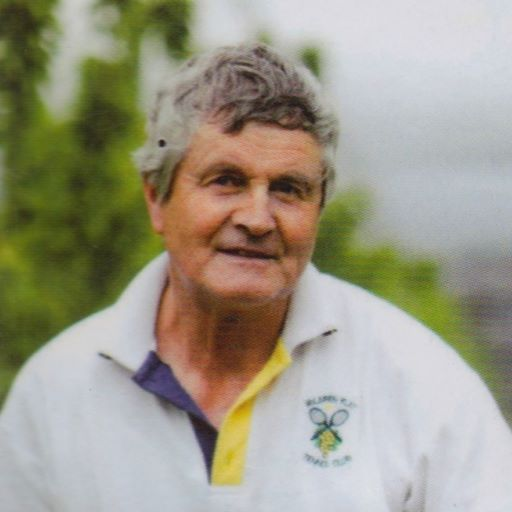
-
Trevor Scott DESMOND b 1953 m (1977) Linda Joy STUTCHBURY b 1957
- Brett DESMOND b 1982 m (2018) Rachel Margaret STAPLETON b 1988
- Stella Margaret DESMOND b 2018
- Harry Scott DESMOND b 2020
- Libby Michelle DESMOND b 1984 m (2014) Joseph Thomas SIEBERT b 1981
- Lenny Oliver SIEBERT b 2015
- Lachlan Joseph SIEBERT b 2017
- Amelie Joy SIEBERT b 2020
- Russel Phillip DESMOND b 22/05/1986
- Jeffrey DESMOND
- Joyce SCOTT m Geoff SPENCER
- Martin SPENCER (adopted)
- Llewellyn SPENCER
- Rhonda SCOTT
- Cyril Herman SCOTT b 1902 m (1928) Lorna Clare Eunice PHILCOX
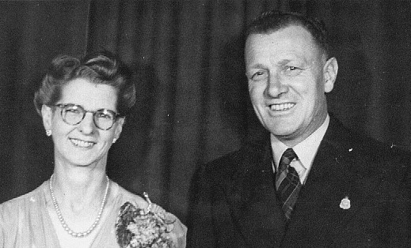

-
Olive Myrtle SCOTT b 1905 d 1997
m (1928)
Norman Oliver QUINTRELL b 1902 d 1974
- Robert Norman QUINTRELL b 1930 d 1989 m (1959) Wilma Patricia BURK
- Laurence Neil QUINTRELL b 1937 d 2011 m (1959) Charmian Lemaistre WILSON
- Lily SCOTT b 1915 m Jack STENNETT
- Miriam STENNET b 1942 m Unknown
- Daughter - unknown
- Sidney Ernest b 1879 d 1880
- Ernest Walter b 22 Jul 1880 d 30 Dec 1880
- Alfred Edgar b 1881 d 1949 m Minnie HAYES
- Richard Percy b 2 Mar 1883 d 25 Feb 1884
- Emma Mabel b 1885 d 1984 m (1904) Alexander James BAILEY
- Ellen May b 1886 d 1974 (daughter Elsie)
- Herbert Stanley b 1888 m (1918) Vera PEARCE
- Eva Myrtle b 28 Jan 1890 d 27 Oct 1890
- Clair Harold b 1892
- Clair Clement SCOTT b 1849 d 1910 m (1871) Mary Bary CLEMENS b 1852 d 1871 b 1850 d 1910
![[X]](scott-tree/images/alice-post-office-glenelg.jpg) 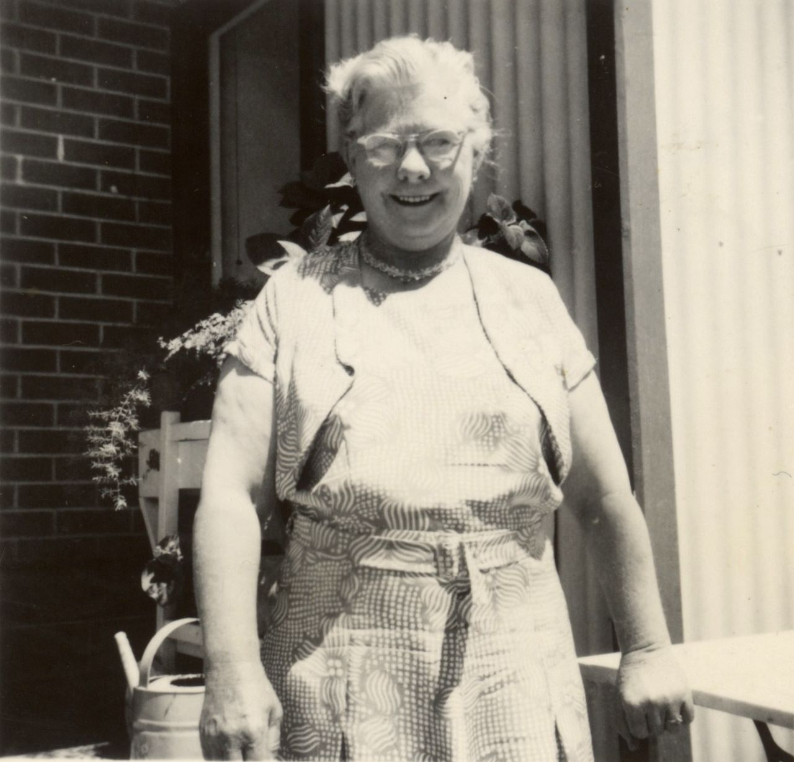
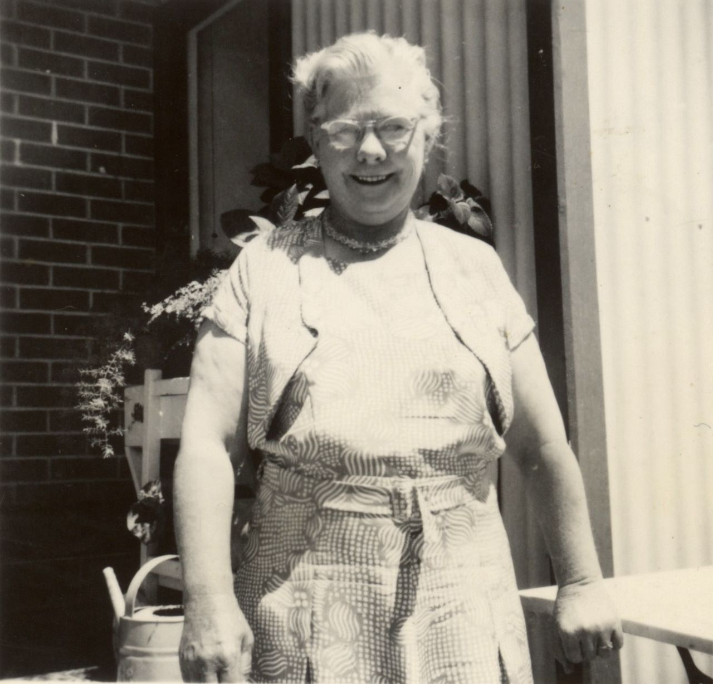
![[X]](scott-tree/images/arnie_voliet-at-miriams-wedding_colourised.jpg) 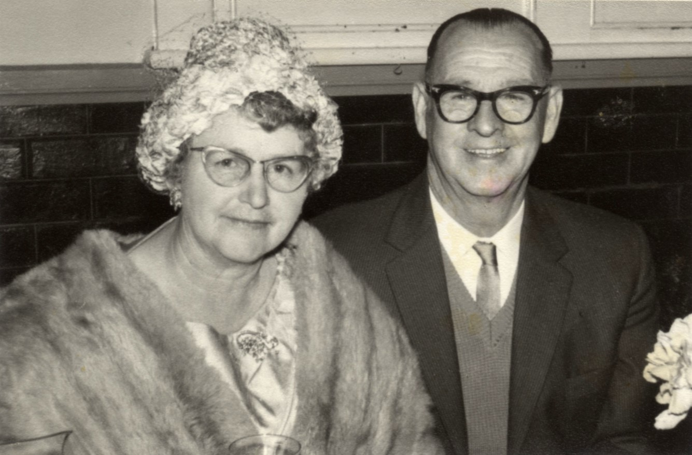
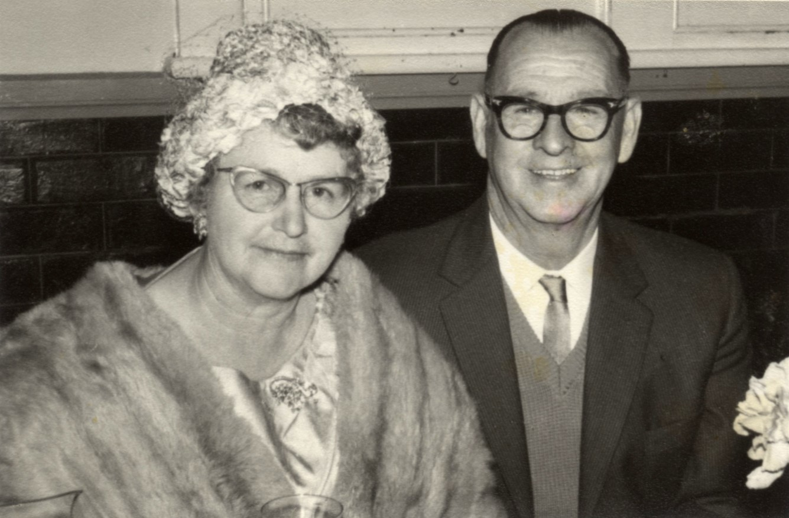
![[X]](scott-tree/images/arnie_voliet-at-miriams-wedding.jpg)
![[X]](scott-tree/images/norma_colourised.jpg) 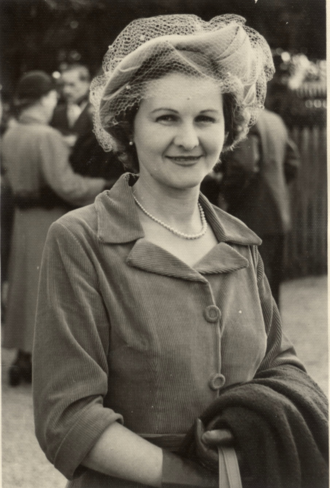
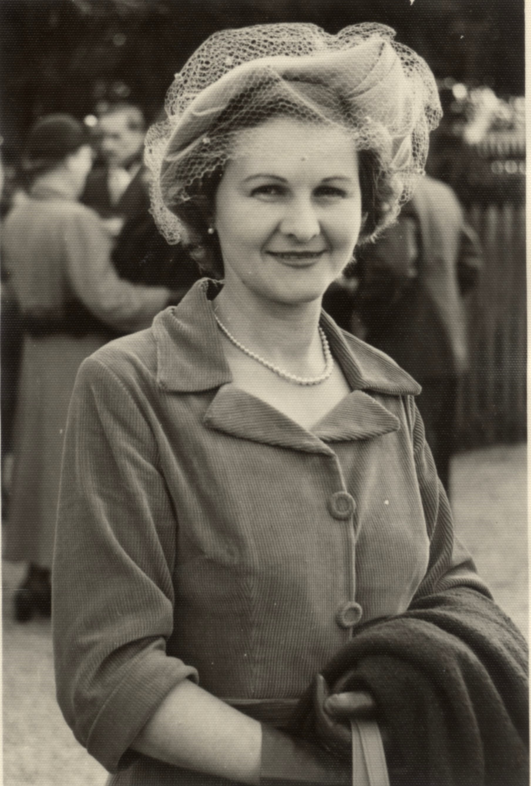
![[X]](scott-tree/images/ray-desmond.jpg)
![[X]](scott-tree/images/trevor-desmond.jpg) 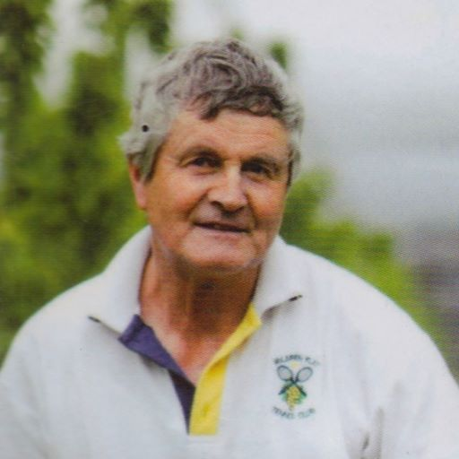
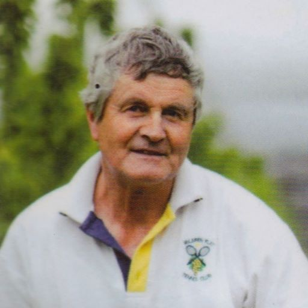
![[X]](scott-tree/images/Olive-Norman_colourised_x2.jpg) 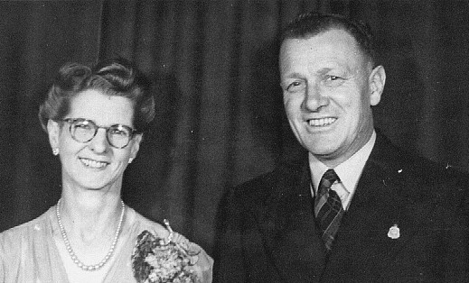
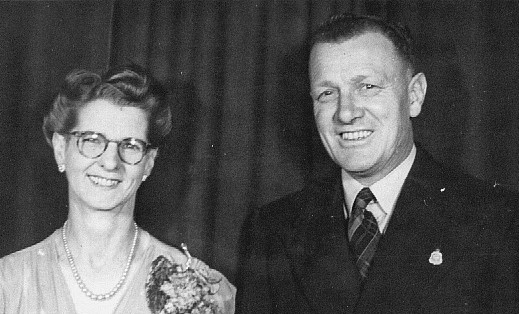